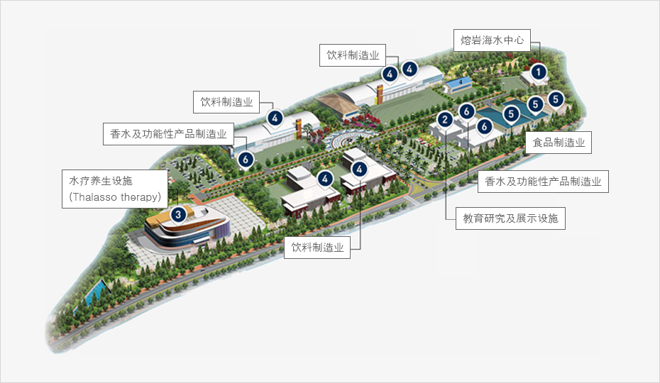
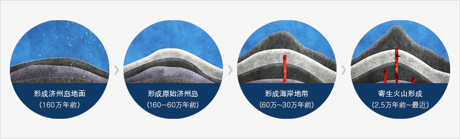
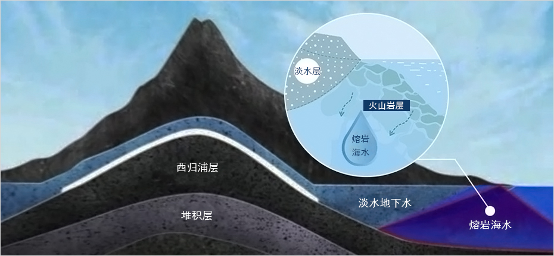
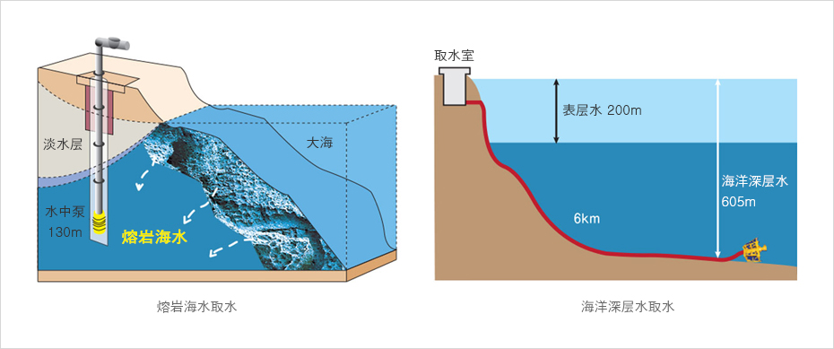
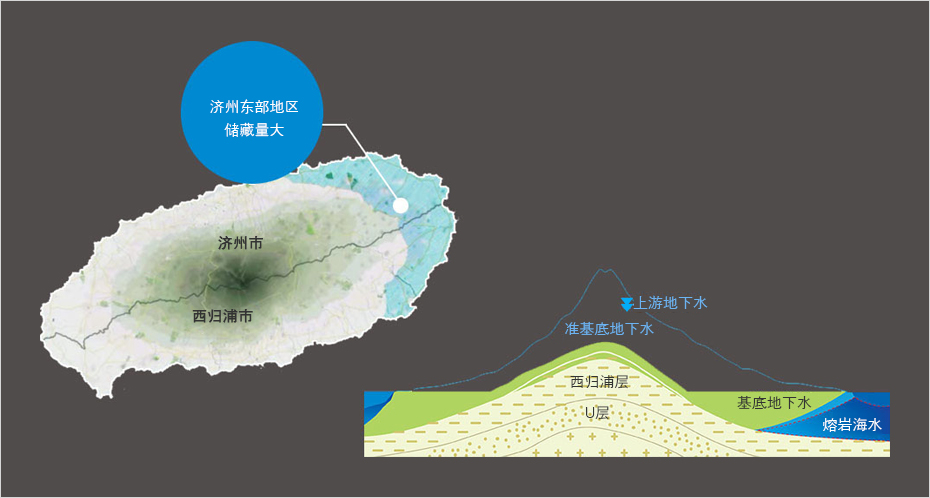

（特殊园区）熔岩海水园区
- Home
- 投资环境
- 投资选址
- （特殊园区）熔岩海水园区
济州熔岩海水园区 (Lava Seawater Industrial Complex)
园区结构



-
1熔岩海水中心
- 基建支持、构建产学合作网络、技术开发及宣传、营销支持
-
2教育研究及展示设施
- 熔岩海水及其衍生产品相关宣传及展示、销售、教育空间
-
3水疗养生设施(Thalasso therapy)
- 可对接旅游产业，实施海洋疗法的治疗和休养设施。
-
4饮料制造业
- 使用熔岩海水生产饮用盐地下水及功能性饮料。
-
5食品制造业
- 使用熔岩海水生产食品（盐干制品、功能性食品等）
-
6香水及功能性产品制造业
- 生产添加熔岩海水的香水及功能性产品。
什么是熔岩海水？
太古济州大海造就的清澈之水
熔岩海水不仅富含矿物质、营养盐类，而且几乎不含有机物及病原菌，是济州独有的特殊地下水资源。 济州岛的诞生和熔岩海水的生成


什么是熔岩海水？
熔岩海水是海水经火山岩层天然过滤后，渗透到陆地地下的水资源，不仅富含矿物质、营养盐类，而且几乎不含有机物及病原菌，是济州独有的特殊地下水资源。


熔岩海水和海洋深层水
由于海洋深层水需要在水深200米以上的深海取水，其取水管道安装及管理费用较高。
相反，熔岩海水可在陆地取水，开采费用相对较低。而源自火山岩层的矿物质还可用于多种领域。
相反，熔岩海水可在陆地取水，开采费用相对较低。而源自火山岩层的矿物质还可用于多种领域。


熔岩海水的生成&分布
州东部地区分布有海水渗透力良好的火山岩层，熔岩海水主要储存在济州东部地区。


产业用途
发展利用熔岩海水的济州型创意产业
熔岩海水富含天然钙、镁等有用的矿物质，功能性饮料和化妆品等多种品类有望提高附加值。-
饮料
- 饮用盐地下水、功能性饮料
- 结合地区特产的混合饮料
- 以矿物质为原料的运动饮料
-
化妆品
- 皮肤修护/功能性乳液、面霜、啫喱
- 入浴剂及水疗用产品
- 洁肤产品（香皂、洗发水等）
-
食品
- 钙、镁补充剂等功能性食品
- 豆腐、酸奶等发酵饮料
- 添加脱盐水/浓缩水的食品调料
- 酒类（传统酒、烧酒、啤酒）
-
原料
- 旅游产业及体验教育
- 栽培绿色果蔬
- 培养高附加值海洋生物
园区入驻咨询
- 地址 : 济州特别自治道济州市旧左邑汉东里2972-1号一带
- 总机号码 : 064-720-3092
- 传真号码 : 064-784-1715
- 官方网站 : http://www.jejulavawater.com